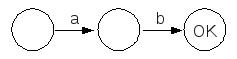
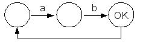

Torna alla pagina di Ingegneria del Software
:: Ingegneria del Software - Appunti del 23 Marzo 2009 ::
Come abbiamo visto, gli automi sono belli etc. ma hanno dei limiti relativi ai fattori legati al tempo (sincronizzazione) e alla mancanza di memoria.
Prendiamo questo semplice esempio: voglio un automa che riconosca e accetti le stringhe del tipo ambm, ovvero in cui la a compaia lo stesso numero di volte della b.
Finché m è un numero ragionevole e noto a priori, posso costruire il mio automa (immaginate il numero esorbitante di stati) che riconosca queste stringhe. Ma se m invece è un numero arbitrario, non c'è modo di costruire un automa che risolva questo problema. Notiamo per inciso che gli automi con un grande e ingestibile numero di stati sono detti automazzi.
Esistono però gli automi con memoria, detti PDA, ovvero pushdown automata. La memoria, in questo tipo di automi, viene modellata tramite uno stack (push è l'operazione di mettere un elemento in cima allo stack). Le transizioni dipenderanno quindi dallo stato presente, dall'input e dall'elemento in cima allo stack, e porteranno ad un nuovo stato e ad una diversa cima dello stack. Tornando al nostro esempio, lo implementeremo facendo in modo che una stringa a aggiunga un elemento allo stack, e che b lo tolga. In questo modo potremo rappresentare semplicemente i requisiti di temporizzazione dicendo che se lo stack è vuoto allora abbiamo lo stesso numero di occorrenze delle due stringhe.
I PDA non sono da studiare!
Il motivo per cui non guardiamo i PDA è che vogliamo altri modelli che non siano solo più espressivi, ma anche più compatti, ovvero le reti di Petri.
Le reti di Petri sono un grafo bipartito. Un grafo bipartito è un grafo in cui i nodi possono essere di due tipi, e ha la regola stringente per cui un nodo di un tipo non può mai essere connesso tramite un arco ad un altro nodo dello stesso tipo. Pertanto, gli archi connettono sempre nodi di tipo diverso.
I tipi di nodo sono i seguenti:
Oltre ai posti ed alle transizioni, una rete di Petri contiene anche un certo numero di token. I token vengono rappresentati con dei pallini neri, che vengono disegnati nei posti. Un posto può contenere anche più di un token in un dato istante, o anche non contenerne nessuno.
Uno stato è una certa distribuzione di token nei posti. Attenzione: non confondiamo gli stati degli automi, rappresentati anch'essi con dei cerchi, con i posti delle reti di Petri, confusionariamente rappresentati anch'essi con dei cerchi.
In quest'immagine vediamo la stessa rete di Petri, disegnata a sinistra e a destra. Quello che cambia è la distribuzione dei token nei posti, e questo vuol dire che la rete di sinistra rappresenta uno stato diverso rispetto alla rete di destra.
Le precondizioni di una transizione sono l'insieme di tutti quei posti che sono collegati alla transizione con delle frecce entranti (ovvero delle frecce che escono dai posti ed entrano nella transizione).
Le postcondizioni di una transizione sono invece l'insieme di tutti i posti collegati alla transizione da frecce uscenti.
Si ha uno scatto quando una transizione viene attivata (abilitata). La regola di scatto dice che una transizione scatta quando tutte le sue precondizioni sono soddisfatte, il che vuol dire, secondo le definizioni viste qui sopra, che scatta quando tutti i posti ad essa collegati con frecce entranti sono pieni.
Dopo lo scatto, la transizione ridistribuisce i token nelle proprie postcondizioni.
Nell'immagine qui sopra, possiamo immaginare che sia avvenuto uno scatto che abbia portato un token dal posto superiore al posto inferiore. Il risultato di uno scatto è una redistribuzione dei token, il che vuol dire, secondo la definizione di stato vista sopra, che una transizione quando scatta fa cambiare stato alla mia rete di Petri. Questa è la semantica della mia rete di Petri: una funzione che associa il tempo alla diversa successione di stati, o in altre parole, alla sua evoluzione. Se ogni stato è a sua volta una funzione che associa ad ogni posto un certo numero di token, allora la vita della rete di Petri è una successione di funzioni di questo tipo.
Partiamo da una domanda: dato un certo assegnamento di token in una rete di Petri, sarà possibile in futuro avere un'altra situazione data? Ovvero, potrò fare delle previsioni?
Si tratta di una domanda matematica che, per via del fatto che le reti di Petri hanno una semantica, è calcolabile e dimostrabile: in questo modo è possibile stabilire l'esatto comportamento di una rete di Petri.
Ma a noi ingegneri del software non interessa solo questo: vogliamo che il nostro programma rispetti fino in fondo il comportamento della rete di Petri che tanto ci siamo sbattuti a costruire, in particolar modo per ciò che concerne le regole di scatto.
Se riusciamo a garantire che il nostro software si comporti esattamente come la rete di Petri, allora siamo a posto. Ma come faccio? La soluzione consiste nell'avere un generatore di codice automatico che, data una rete di Petri, produce automaticamente del codice sorgente il cui comportamento rispetta quello della rete. Questo algoritmo esiste ed è validato, e si dimostra molto molto utile per quei programmi in cui la maggior parte dei requisiti sono di temporizzazione e sincronizzazione (in aula ha fatto l'esempio delle funivie).
Ricordiamo fino alla nausea che l'algoritmizzazione di un tale procedimento è possibile proprio perché le reti di Petri sono dotate sia di sintassi che di semantica.
Una rete di Petri è detta pura se gli insiemi delle precondizioni e delle postcondizioni sono disgiunti. Vuol dire che non esistono anelli che congiungono una transizione con se stessa, o meglio che non deve esistere nessun posto collegato alla stessa transizione sia in entrata che in uscita. Possiamo verificare tale proprietà anche nelle matrici I e O che vedremo successivamente.
Il requisito di purezza di una rete di Petri è fondamentale per poter dimostrare alcuni teoremi matematici su di essa, in particolar modo quelli che ne riguardano il funzionamento e l'evoluzione. Man mano che allargo la classe dei problemi diventa sempre più difficile da garantire.
Anche con gli automi potrei dimostrare dei teoremi, ad esempio che non è possibile arrivare ad un certo stato dopo determinati passaggi, ma si tratta di una dimostrazione che va avanti per enumerazione elencando tutti i passaggi, quindi nel migliore dei casi ci metto un'eternità (sperando sempre che non ci siano cicli).
Esistono tuttavia tecniche più compatte che però non sono sempre applicabili, ma solo per certi tipi di dimostrazioni e solo in certi casi. Una di queste è il lemma di espansione, che si applica felicemente a casi come questi:
|

Riesco a dimostrare con l'enumerazione che non posso arrivare allo stato OK senza avere almeno un a | ->aggiungo un ciclo ->
|

Quanto detto prima resta vero anche con l'aggiunta del ciclo, dimostrazione che non potrei fare per dimostrazione. |
Una rete di Petri è una quadrupla (P, T, I, O):
La faccenda del multinsieme è un po' particolare... Innanzitutto, un multinsieme è un insieme in cui un elemento può comparire più volte. Il generico elemento I(i,j) rappresenta l'input della transizione j. Il generico elemento O(i,j) rappresenta invece l'output della transizione j.
Nella posizione I(i,j) metto un 1 se il posto i-esimo è precondizione della transizione j-esima, 0 altrimenti.
Allo stesso modo, nella posizione O(i,j) metto un 1 se il posto i-esimo è postcondizione della transizione j-esima, e 0 in caso contrario.
Nella rete qui accanto (disegno mancante!) ho tre posti e tre transizioni. Vediamo di compilare le nostre matrici I e O.
| Matrice I: | |||
| T1 | T2 | T3 | |
| P1 | 1 | 0 | 0 |
| P2 | 1 | 0 | 0 |
| P3 | 0 | 1 | 1 |
| Matrice O: | |||
| T1 | T2 | T3 | |
| P1 | 0 | 1 | 0 |
| P2 | 0 | 0 | 1 |
| P3 | 1 | 0 | 0 |
Una matrice vale più di mille parole:)
La marcatura è invece un vettore colonna, con tanti elementi quanti sono i posti, e ha quindi la stessa dimensione della colonna di una matrice. Una marcatura è un assegnamento di token ai posti della nostra rete, ed è pertanto la rappresentazione di uno stato. Una rete di Petri si "sposterà" da una marcatura ad un'altra.
Il fatto di rappresentare le precondizioni e le postcondizioni tramite matrici ci permette di rappresentare le variazioni di marcatura tramite un'altra matrice, chiamata matrice di incidenza (C).
La C è definita come O - I, il che vuol dire che ogni elemento della matrice C contiene la sottrazione del corrispondente elemento di I dal corrispondente elemento di O.
Per la rete che abbiamo visto sopra, la corrispondente matrice C sarà come segue:
| Matrice O: | |||
| T1 | T2 | T3 | |
| P1 | -1 | 1 | 0 |
| P2 | -1 | 0 | 1 |
| P3 | 1 | -1 | -1 |
Pertanto il singolo elemento C(i,j) rappresenta la variazione di marcatura del posto i-esimo dovuta alla transizione j-esima. La matrice di incidenza mi dice quindi come cambia il numero di marcatori in un posto allo scattare delle condizioni di attivazione.
E notiamo bene che è possibile utilizzare la matrice C al posto di I e di O, perché le "riassume" entrambe, ma solo a condizione che la nostra rete di Petri sia pura: il motivo è che se una rete non è pura, allora avrei dei posti che sono sia precondizione che postcondizione di qualche transizione, e pertanto non saprei come rappresentare la variazione di marcatura (considererei due volte lo stesso token). Oh, è più facile da capire che da spiegare:)
Per sapere la marcatura di una rete dopo una certa transizione i, possiamo applicare la seguente formula matematica:
M' = M + C(*, i)
che significa: la marcatura M' è equivalente alla marcatura iniziale M, alla quale applico l'intera colonna i-esima della matrice C, che è appunto la matrice delle variazioni di marcatura relative alla transizione i.
Questa è l'equazione fondamentale della rete, e mi fornisce una traiettoria dell'evoluzione della rete di Petri stessa.
Allo stesso modo, una combinazione di transizioni la posso formulare così:
M' = M + C(*, i) + C(*, j) + ... + C(*, n)
e la posso riassumere con
M' = M + Cs
dove s è una stringa che seleziona le colonne della matrice C da applicare in sequenza a M.
Dal punto di vista grafico, una freccia che conduce da un posto ad una transizione è etichettata da un numero che indica quanti token vengono spostati da quella transizione. L'assenza di indicazioni sottointende un canale di capacità 1.
Supponiamo di voler modellare con una rete di Petri un sistema rappresentato da una CPU che deve accedere a tre dischi diversi. Ai dischi si accede con due canali: il primo canale porta al primo e al secondo disco, mentre il secondo canale porta al secondo e al terzo disco (il secondo disco è quindi raggiungibile tramite due canali diversi). Si può petrificare una rete del genere?
La CPU, in teoria, a seconda della destinazione, sa a quale controller inviare i dati, e dal punto di vista del programmatore non è affatto un problema. Ma al livello della rete di Petri, avendo solamente token a disposizione, come facciamo a distinguere tra un token che rappresenta una scrittura verso un disco da un altro token che invece vuole scrivere su un altro disco?
I token rappresentano spesso oggetti o risorse, ma nel mondo reale (e in quello informatico) gli oggetti e le risorse hanno delle proprietà. Invece i token, per come li abbiamo definiti noi, non hannno affatto queste proprietà!
La soluzione a problemi di questo genere verrà in futuro, quando tra le estensioni alle reti di Petri che ne aumentano il potere espressivo tireremo fuori dal cilindro quella dei colori.